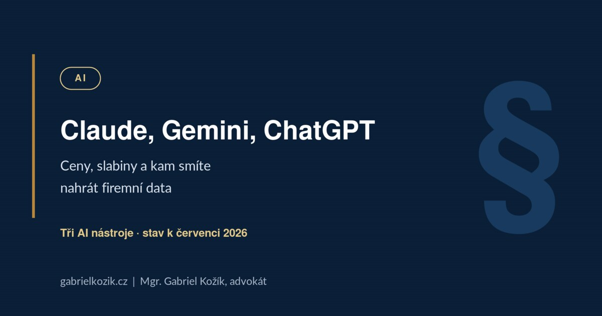

Claude vs. Gemini vs. ChatGPT: který AI nástroj zvolit jako freelancer nebo malá firma?

Srovnání tří asistentů z pohledu člověka, který je používá v advokátní praxi — a který zároveň řeší, co se s vašimi daty stane potom.
Ceny a názvy modelů se mění v řádu týdnů, proto si je před rozhodnutím ověřte. Právní a bezpečnostní část tohoto článku ale platí bez ohledu na to, jaká verze modelu zrovna běží. Stav k 30. 7. 2026.
A ještě jedna věc na rovinu, ať se v tom čtete správně: vedle advokacie školím firmy v práci s AI nástroji od Googlu. Na doporučení v tomto článku se tedy dívejte s tímto vědomím — snažím se být férový, ale nejsem nezaujatý pozorovatel.
Tři kolegové, které si můžete najmout
Než se dostaneme k tabulkám a cenám, zkusme si ty tři nástroje představit jako lidi, které byste si mohli vzít do týmu.
Claude je váš specialista-analytik
Jde na všechno systematicky, radši se zeptá, než aby si domyslel, a když si není jistý, přizná to. Je trochu technicistní a občas pomalejší — ale u revize smlouvy, tvorby právního rozboru nebo psaní dlouhého textu je to přesně ten typ kolegy, kterého chcete mít po boku.
ChatGPT je univerzální kolega s největší sítí kontaktů
Poradí si se vším: umí mluvit, kreslit, generovat kód i propojovat aplikace. Pokud chcete jednoho člověka „na všechno“ a nechcete řešit, v čem je kdo nejlepší, berete jeho.
Gemini je kolega, který už rovnou sedí ve vaší kanceláři
Vidí vám do e-mailů, dokumentů i tabulek v Google Workspace, takže mu nemusíte nic složitě vysvětlovat ani nikam nahrávat. V týmovém prostředí dává největší ekonomický smysl — a jako jediný má přes firemní tarif rovnou vyřešenou mlčenlivost.
Takhle se ty nástroje chovají dnes. Vývoj jde extrémně rychle a za půl roku může být obraz jiný.
Pozor na „přikyvování“
Než půjdeme k technickým detailům, jedna věc, která platí pro všechny tři stejně a ušetří vám nejvíc problémů i peněz.
Jazykové modely mají přirozenou tendenci souhlasit s tím, co jim předložíte. Když do chatu napíšete „Myslím, že tahle smluvní doložka je v pořádku, souhlasíš?“, je velká šance, že dostanete přitakání — bez ohledu na to, zda je doložka v pořádku, nebo vás vede do průšvihu.
Ptejte se proto vždy opačně:
- „Najdi mi v tomto návrhu tři hlavní slabá místa.“
- „Co by proti tomuto argumentu namítla protistrana nebo skeptický investor?“
- „Kde v této smlouvě riskuji nejvíc?“
Tady se láme chleba mezi nebezpečným výstupem a reálně použitelným podkladem pro byznys.
Nejdřív se vyznejte v názvech
Pro začátečníka je orientace v názvech modelů často větší překážka než samotný výběr nástroje. Dnes je situace následující.
Claude (Anthropic)
V tarifu Pro (20 USD měsíčně) je výchozím modelem Sonnet 5 jako rychlý pracovní kůň a nejsilnějším dostupným modelem je Opus 5 pro hlubokou analýzu a náročné texty. Nad touto řadou existují ještě modely třídy Mythos — ty ale nejsou volně dostupné, Anthropic je zpřístupňuje jen omezenému okruhu partnerů. Veřejně použitelnou variantou z této třídy je model Fable 5. Pro běžnou firemní práci se bez obou obejdete.
Gemini (Google)
Nevybíráte konkrétní číselné označení modelu, ale pracovní režim: Fast pro běžné operativní dotazy a Thinking pro složité analytické úlohy. Pod nimi běží aktuální generace Gemini — v tarifu Google AI Pro je to Gemini 3.1 Pro, v levnějším AI Plus starší Gemini 3 Pro.
ChatGPT (OpenAI)
Ani zde už nevybíráte model, ale míru uvažování. Výchozí je Instant (pohání ho GPT-5.5 Instant) pro rychlé odpovědi, nad ním stupně Medium, High a Extra High, které běží na GPT-5.6 Sol pro náročné logické úkoly. Označení jako Terra nebo Luna uvidíte jen v API a podnikovém prostředí.
Praktická rada: neřešte verze. Ponechte výchozí nastavení a přepněte na silnější analytický režim jen ve chvíli, kdy řešíte rozbor smlouvy, finanční model nebo strategickou otázku.
Ceny: samostatně vs. v balíčku
Samostatné individuální tarify stojí u všech tří hráčů prakticky stejně — kolem 20 USD měsíčně (Claude Pro, ChatGPT Plus, Google AI Pro za 19,99 USD). Pokud hledáte nejlevnější individuální vstup, existují základní verze jako Google AI Plus (4,99 USD) nebo ChatGPT Go.
Pokud ale řídíte tým nebo malou firmu, ekonomika se mění. Největší smysl dává Gemini v rámci Google Workspace. Google v roce 2025 zrušil samostatné AI přípatky a Gemini zahrnul přímo do všech tarifů Workspace — Business Standard tak vychází zhruba na 14 USD za uživatele měsíčně při roční fakturaci. V této ceně nemáte jen AI asistenta, ale kompletní firemní infrastrukturu: e-mail na vlastní doméně, sdílený cloudový disk, kalendář a kancelářský balík.
To nejdůležitější: co se děje s vašimi daty
Tady firmy chybují nejčastěji. Volba bezpečnostního režimu je násobně důležitější než to, jestli má model o dvě procenta lepší výsledek v testu logiky.
| Nástroj / tarif | Trénuje se na vašich datech? | Právní ochrana (DPA) | Vhodnost pro firemní data |
|---|---|---|---|
| Claude Pro / Max | Ano, pokud to ručně nevypnete v nastavení. Při zapnutém trénování se navíc retence dat prodlužuje z 30 dní na 5 let. | Pro běžný účet chybí garantované DPA. | Jen podmíněně — po vypnutí trénování a anonymizaci. |
| ChatGPT Plus / Pro | Ano, pokud to nevypnete v sekci Data Controls. | Pro běžný účet chybí garantované DPA. | Jen podmíněně — po vypnutí trénování a anonymizaci. |
| Gemini — běžná konzumní aplikace | Ano, prompty mohou číst i lidští kontroloři. | Bez DPA smlouvy. | Nevhodné |
| Gemini přes Google Workspace | Ne. Trénování je smluvně vyloučeno. | DPA je automaticky součástí smlouvy a obsahuje standardní smluvní doložky. | Vhodné — uložená data zůstávají v EU. |
K datové rezidenci v EU: u Google Workspace platí garance EU primárně pro uložená data. Samotné výpočetní zpracování dotazu může technicky běžet přes globální infrastrukturu. Nejde tedy o stoprocentní „EU-only processing“ — z pohledu compliance je to ale řádově robustnější pozice než jakákoli konzumní verze.
Riziko jménem stínová AI
Největším rizikem v malých firmách dnes není absence AI nástrojů, ale takzvaná stínová AI. Zaměstnanci si v dobré víře usnadňují práci tím, že do svých soukromých účtů nahrávají klientské databáze, interní smlouvy nebo finanční výkazy. V ten moment jako jednatelé ztrácíte kontrolu nad obchodním tajemstvím i nad plněním GDPR.
Řešením není zákaz — ten lidé obejdou. Řešením je dát jim firemní účet, aby neměli důvod sahat po soukromém, a doplnit ho jasnými pravidly, co kam patří. Jedním z nástrojů, které se do takového nastavení dobře hodí, je NotebookLM.
NotebookLM: uzavřené prostředí pro vaše dokumenty
Pokud potřebujete pracovat s interními směrnicemi, stovkami stran PDF nebo nahrávkami z porad, vyzkoušejte NotebookLM od Googlu. Využívá sílu Gemini, ale pracujete v uzavřeném prostředí nad zdroji, které sami nahrajete. Model si nevymýšlí — čerpá výhradně z vašich podkladů — a u každé odpovědi vám dá přesnou citaci. Pro rešerše a interní znalostní bázi je to aktuálně nejsilnější nástroj ve své kategorii.
Důležité rozlišení: NotebookLM v rámci Google Workspace spadá pod firemní DPA a data se netrénují — sem citlivé dokumenty patří. NotebookLM na soukromém Google účtu běží ve stejném režimu jako konzumní Gemini, tedy bez DPA. Riziko je výrazně nižší než u volného chatu, ale nulové není.
Anonymizace není totéž co pseudonymizace
Mnoho podnikatelů žije v přesvědčení, že když v textu nahradí jméno klienta výrazem „Klient A“, mají GDPR splněno. Nemají.
Pseudonymizace — nestačí
„Klient A, provozovatel jediné pekárny v obci se šesti sty obyvateli na Tišnovsku, se domáhá slevy 340 000 Kč z ceny díla po havárii pece dne 14. 3. 2025.“
Jméno zmizelo, ale osoba je stále snadno identifikovatelná. Z pohledu práva jde pořád o osobní údaj.
Anonymizace — takto ano
„Klient A, provozovatel jediné pekárny v obci se šesti sty obyvateli na Tišnovsku, se domáhá slevy 340 000 Kč z ceny díla po havárii stroje dne 14. 3. 2025.“
Odstraněny jsou i unikátní kontextové detaily — obor v kombinaci s velikostí a lokalitou obce, přesná částka i datum. Teprve teď je vazba na konkrétní osobu přerušena.
Skutečná anonymizace znamená, že údaj nelze zpětně přiřadit ke konkrétní osobě žádným rozumně dostupným způsobem, a to ani při kombinaci s jinými informacemi. U menších obcí a specifických kauz je laťka výrazně vyšší, než se zdá.
Pravidlo pro praxi: pracujete-li s citlivými daty, vždy kombinujte anonymizaci (odstranění unikátních kontextových detailů) s používáním firemního účtu, kde je trénování vypnuté smluvně. Jedno bez druhého je poloviční řešení.
Kde který nástroj naráží
Abychom byli objektivní, každý systém má své mouchy. Následující postřehy vycházejí z mé vlastní praxe, ne z veřejných benchmarků — u někoho jiného může zkušenost vypadat jinak.
- Gemini — v mé zkušenosti o něco slabší kultivovanost psaného textu v češtině; u stylizovaných PR textů může znít šroubovaně a „překladově“. Zaostává také u komplexnějšího vícekrokového uvažování.
- Claude — je pomalejší, u bezplatné verze narazíte na limity během několika dotazů a ze všech tří nabízí nejméně přímých integrací do dalších aplikací.
- ChatGPT — je stavěný jako univerzální generalista. V žádné jednotlivé disciplíně nemusí být absolutní jednička a na bezplatném tarifu vás bude obtěžovat reklamou a přísnými limity.
Který nástroj na jaký úkol
| Typ úlohy | Doporučený nástroj | Proč |
|---|---|---|
| Smlouvy, právní rozbory, dlouhé texty | Claude | Nejlepší práce s detailem, precizní stylizace, konzistence napříč dlouhým dokumentem. |
| Každodenní práce v e-mailu, Docs a Sheets | Gemini | Přímá integrace do Google Workspace bez nutnosti cokoli přenášet. |
| Rešerše z vlastních dokumentů a PDF s citacemi | NotebookLM | Uzavřené prostředí nad vlastními zdroji a přesné odkazování. |
| Analýza audia a videa | Gemini | Nativní multimodalita — model rozumí zvuku i obrazu přímo, ne přes přepis. |
| Hlasová konverzace, tvorba obrázků | ChatGPT | Nejrozvinutější ekosystém pro hlasový vstup a generování médií. |
| Univerzální nástroj na všechno v jednom | ChatGPT | Nejširší paleta funkcí v jednom předplatném. |
Můj verdikt pro freelancery a malé firmy
Pokud jako jednotlivec hledáte primárně nástroj na psaní, vymýšlení a analýzu složitých dokumentů, investujte do Claude Pro.
Pokud ve firmě používáte Google Workspace, je nejrozumnějším krokem aktivovat Gemini pro Workspace. Získáte solidního asistenta přímo v e-mailech a dokumentech, prostředí bez trénování dat a krytí DPA smlouvou v ceně. Pro náročnější právní a analytické úkoly pak stačí dokoupit jednu či dvě licence Claude Pro pro klíčové lidi.
Uklouznout u GDPR nebo pustit obchodní tajemství ven přes soukromý účet zaměstnance je otázka jednoho kliknutí. Pokud chcete nastavit jasná pravidla, provést audit AI procesů nebo připravit interní AI směrnici na míru, domluvte si s námi v IUSTORIA nezávaznou schůzku. Nastavíme to tak, aby to vaši firmu chránilo, ale nebrzdilo v růstu.
Článek popisuje stav k 30. 7. 2026 a slouží k obecné orientaci. Nejde o právní poradenství ke konkrétnímu případu.
← Zpět na přehled článků